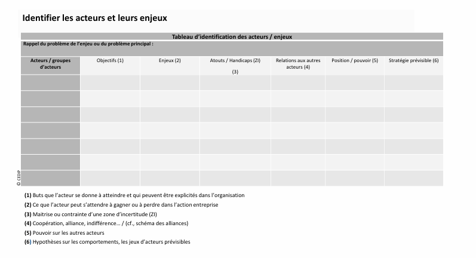

Le projet vise à développer un outil informatique innovant de modélisation et de visualisation des stratégies organisationnelles en entreprise, en s’appuyant sur les théories des organisations issues des sciences humaines et sociales.
Cet outil, destiné aux étudiants de l'ISEN suivant les cours de sociologie des organisations ainsi qu'à leurs enseignants, permettra de représenter sous forme de tableaux et de graphes dynamiques les différentes composantes des organisations sociales :
individus, rôles, relations hiérarchiques, motivations, déterminants et logiques d’acteurs.
L’objectif est de concevoir un éditeur intuitif et évolutif, offrant une visualisation flexible des structures organisationnelles pour mieux analyser et comprendre les dynamiques internes des entreprises.
Les entités et leurs relations seront stockées dans une base de données, assurant ainsi une gestion optimisée et une mise à jour efficace des modèles.
Les technologies à utiliser seront définies au cours du projet, afin d’assurer une solution adaptée aux besoins des utilisateurs.
Une organisation est un ensemble humain structuré, en mouvement permanent. Elle repose sur :
Une organisation ne se limite pas à sa structure officielle (organigramme). Elle fonctionne aussi grâce aux relations informelles et aux jeux de pouvoir entre les acteurs.

Dans une entreprise, les relations de travail ne sont pas seulement définies par l'organigramme, mais aussi par des échanges informels essentiels au bon fonctionnement.

Deux grands penseurs ont marqué la sociologie des organisations :
Développée par Michel Crozier et Erhard Friedberg, elle repose sur trois postulats :
Les acteurs d’une organisation ont des objectifs différents et des relations de pouvoir complexes. Ce tableau permet d’analyser leurs interactions et leurs zones d’incertitude.
Certains acteurs ont un pouvoir stratégique en contrôlant des informations, des règles ou des compétences spécifiques. Ce schéma montre leur positionnement face aux enjeux de l’organisation.